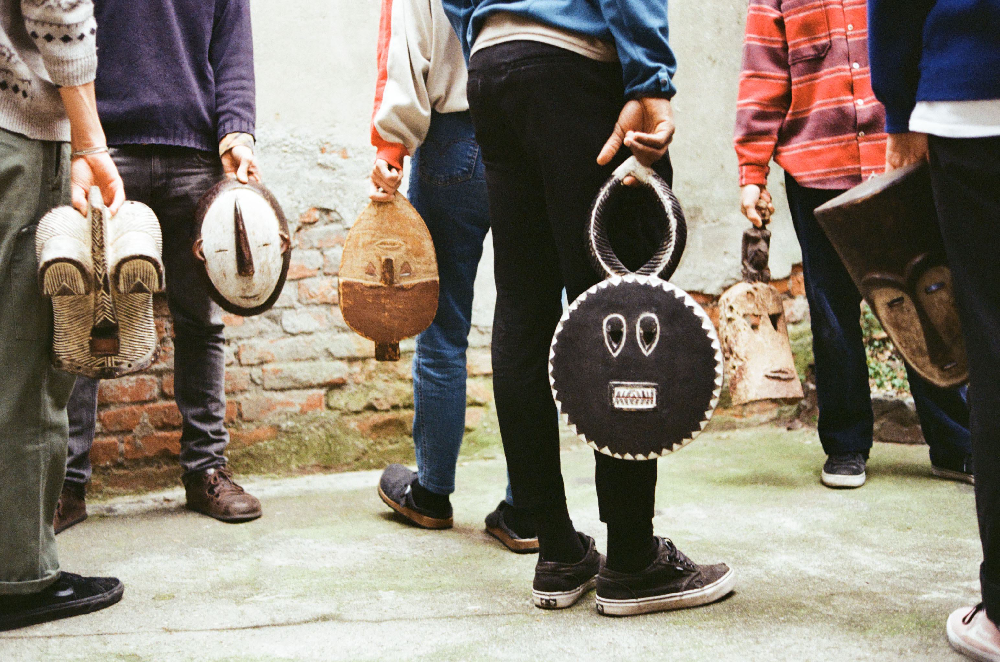
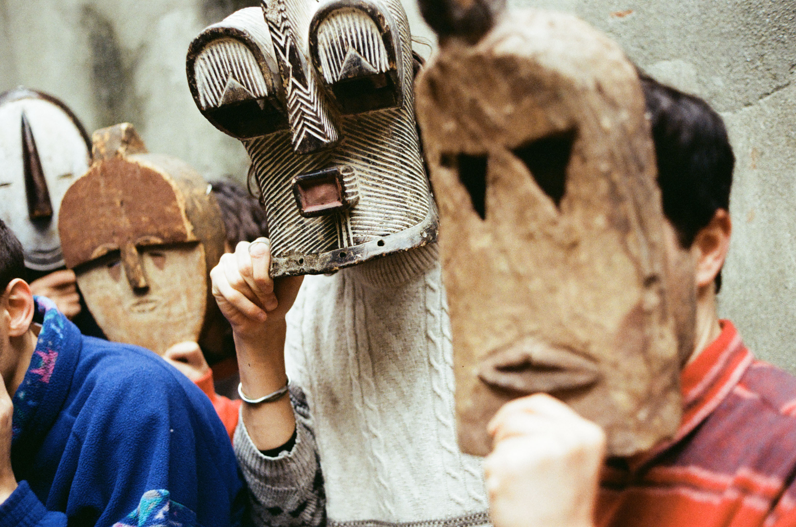
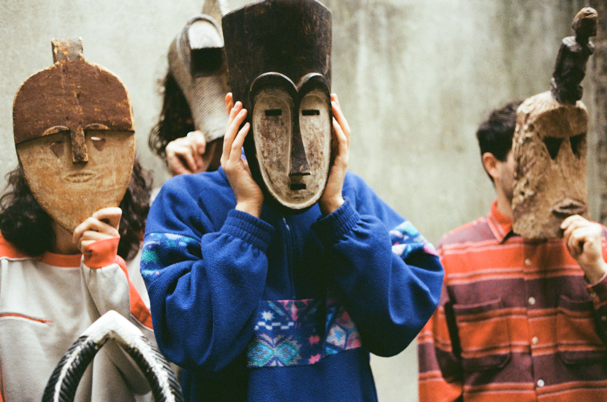
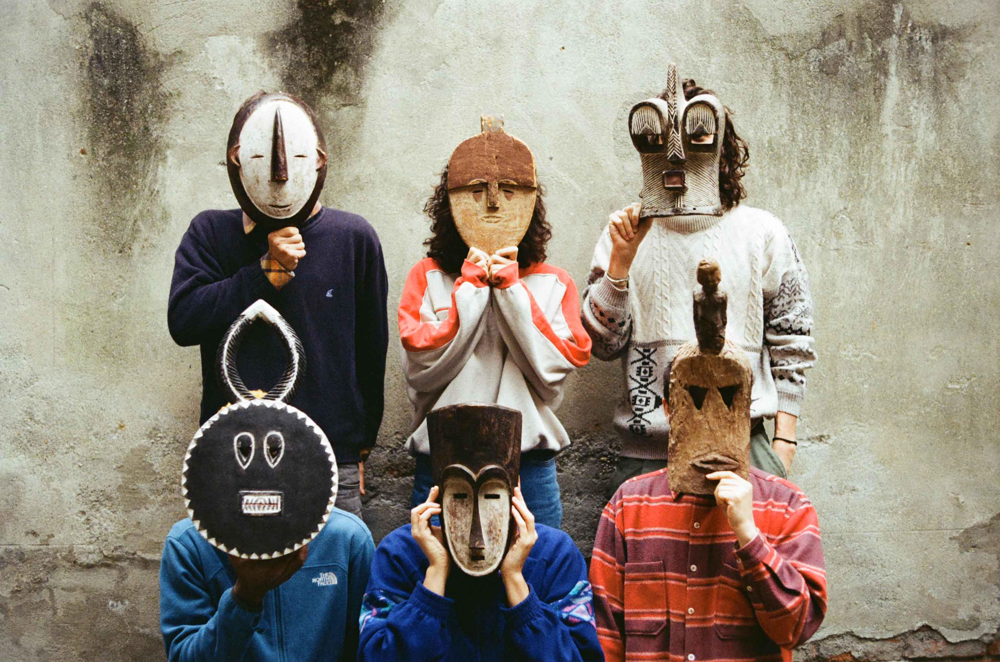

ITA →

Guerilla Spam nasce nel novembre 2010 a Firenze come spontanea azione non autorizzata di attacchinaggio negli
spazi urbani. Oggi alterna la pratica di affissione non autorizzata agli interventi di muralismo pubblico in Italia e all’estero.
Lavora quotidianamente nelle scuole, comunità minorili, centri di accoglienza e carceri; i progetti didattici si concentrano
sul tema delle migrazioni e sull’incontro “dell’altro”, tramite laboratori con italiani e stranieri volti a conoscere differenti
culture. Ha esposto in Italia in musei archeologici nazionali e musei d’arte moderna e contemporanea; hanno parlato
di Guerrilla Spam giornali nazionali come “La Repubblica”, “La Stampa”, “Il Corriere della Sera” e internazionali come
“The Economist”.

ENG →

Guerilla Spam was born in November 2010 in Florence as a spontaneous unauthorized attacking action in urban spaces. Today he alternates the practice of unauthorized posting with public mural interventions in Italy and abroad. He works daily in schools, juvenile communities, reception centers and prisons; educational projects focus on the theme of migration and on meeting "the other", through workshops with Italians and foreigners aimed at learning about different cultures. He has exhibited in Italy in archaeological museums and national museums of modern and contemporary art; National newspapers such as “La Repubblica”, “La Stampa”, “Il Corriere della Sera” and international newspapers such as “The Economist” spoke of Guerrilla Spam.
